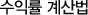

펀드투자 관리
1장. 펀드관리방법
2장. 펀드비교방법
3장. 수익률 계산법
4장. 운용성과 알기

펀드번호
펀드명
기준가
A
잔고좌수
B
평가금액
C=A*B
원금
D
수익률
(C-D)/D*100
만기일
1234
AAA
1,500
1,700
2,550,000
1,800,000
41.6%
2006.10.20
기준가
: 펀드의 당일가격
잔고좌수
: 현재 내가 보유하고 있는 펀드의 총 좌수
(잔고좌수는 펀드를 가입한 은행통장이나 인터넷뱅킹 또는 증권사 홈페이지나 HTS에서 확인 가능합니다.)
평가금액
: (기준가/1000)*잔고좌수를 한 금액
원금
: 내가 지금까지 투자한 총 원금의 합계
수익률
: 평가금액에서 원금을 뺀 것이 수익금액이고 이것을 원금 대비해서 몇 % 벌었는지 나타낸 것이 수익률입니다.
만기일
: 일반적으로 펀드에는 만기가 없으나 펀드가입 당시에 만기를 정한 경우에 해당만기일입니다.
펀드잔고를 보여주는 형식은 은행별로, 증권사별로 차이가 있습니다. 그러나, 실제 수익률은 판매사에 문의하시는 것이 좋습니다.